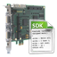

|
||
Silicon Software Runtime 5 Documentation |
||
|  | Software Development Kit |
|
|
||
| SDK Manual |
With the Software Development Kit (SDK) you are able to develop your own C/C++ applications, in order to exploit the microEnable IV functionality to its full extend (Camera Link, LVDS, CoaXPress and GigE Vision) . |
|
| SDK Functions Reference | ||
| CameraLink Serial Interface |
How to use the Camera Link Serial interface - CLSer |
|
| SDK Functions Reference - CL Serial Interface | ||
| SDK Manual - GigE Extensions |
With the Software Development Kit (SDK) extension for GigE Vision frame grabbers you are able to develop your own C/C++ applications, in order to exploit the microEnable IV GigE functionality to its full extend. |
|
| SDK Functions Reference - GigE Extensions | ||
| SDK Manual - CoaXPress Extensions |
With the Software Development Kit (SDK) extension for CoaXPress Frame Grabber you are able to develop your own C/C++ applications, in order to exploit the microEnable 5 CXP functionality to its full extend. |
|
| SDK Functions Reference - CoaXPress Extensions | ||
| I/O Lib - Manual and Function Reference |
Handling of different image file formats: Load, convert, and save |
|
| Display Lib - Manual and Functions Reference |
Display functions for viewing (grabbed) images |
|
| SDK Examples Overview |
Examples for usage of the SDK |
|
| SDK Examples by Functionality |
SDK examples for microEnable IV products by functionality |
|
|
|||||
|
|
|||||